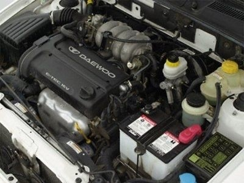

Daewoo Lanos - szczyt technologiczny został osiągnięty
Nie wszyscy wiedzą, że w AD Polska obok szerokiej gamy zamienników karoseryjnych możemy kupić także oryginalne elementy blacharki. W przypadku samochodów marki Daewoo jest tu naprawdę duży wybór. W zalezności od zapotrzebowania Klient może zakupić część oryginalną w pudełku (np. maski w kartonach na drugim planie zdjęcia) lub tańszy zamiennik - elementy bez opakowań.
Koła na stalowych felgach można odkręcać i przykręcać kluczem pneumatycznym, ale podczas dokręcania należy ustawić klucz na najlżejszy moment. Koło trzeba zawsze dokręcać z wyczuciem ręcznie, albo - najlepiej - za pomocą klucza dynamometrycznego. To gwarancja bezpiecznej jazdy oraz tego, że w razie złapania gumy - użytkownik będzie w stanie samodzielnie odkręcić koło.
Zawieszenie przednie: Producent zdecydował się na popularny układ McPherson. W przeciwieństwie do wielu współczesnych samochodów Lanos nie posiada niestety ramy pomocniczej. Kolumna McPherson jest konwencjonalnie osadzona w kielichu w nadwoziu za pośrednictwem poduszki z łożyskiem, a wahacz zamocowany do podłużnicy przez elementy stalowo - gumowe. Oba wahacze łączy stabilizator za pośrednictwem łączników w charakterystycznym kształcie. Wszystkie elementy zawieszenia przedniego można wymieniać oddzielnie.